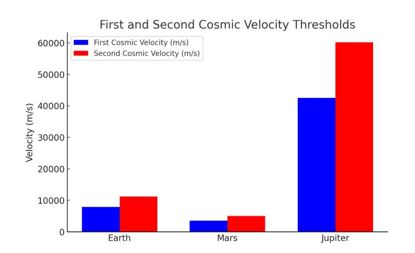

Problem 2
Escape Velocities and Cosmic Velocities
1. Theoretical Foundation
Defining Cosmic Velocity Thresholds
Cosmic velocities delineate the minimal speeds necessary to achieve distinct modes of motion in space:
-
First Cosmic Velocity (Orbital Velocity)
- The minimal velocity required to attain a stable circular trajectory around a celestial body.
- Derived from the equilibrium between gravitational attraction and centripetal acceleration: $$ v_1 = \sqrt{\frac{GM}{R}} $$
-
Second Cosmic Velocity (Escape Velocity)
- The velocity threshold required to overcome a celestial body's gravitational pull without any additional thrust.
- Derived from the principle of energy conservation: $$ v_2 = \sqrt{\frac{2GM}{R}} $$
- It is noteworthy that \( v_2 = \sqrt{2} v_1 \).
-
Third Cosmic Velocity (Solar System Ejection Velocity)
- The velocity needed to leave the Sun’s gravitational domain from a planet’s orbital path.
- Calculated by combining the escape velocity from the planet and the required velocity to depart the Sun’s gravitational influence: $$ v_3 = \sqrt{v_2^2 + v_{sun}^2} $$
- where \( v_{sun} \) represents the planet’s orbital velocity around the Sun.
2. Quantitative Evaluation
- Determinants of Velocity Magnitudes:
- Mass (\( M \)): Celestial bodies with larger masses necessitate greater velocities.
- Radius (\( R \)): Smaller celestial bodies demand higher velocities due to increased surface gravitational intensity.
- Interrelation of Velocity Metrics:
- Escape velocity consistently surpasses orbital velocity.
- The attainment of interstellar travel requires exceeding the third cosmic velocity.
3. Numerical Simulation
The following Python script computes and graphically represents cosmic velocities for Earth, Mars, and Jupiter.
import numpy as np
import matplotlib.pyplot as plt
from scipy.constants import G
def cosmic_velocity_thresholds(mass, radius):
"""Compute first and second cosmic velocity thresholds."""
v1 = np.sqrt(G * mass / radius)
v2 = np.sqrt(2) * v1
return v1, v2
# Celestial bodies data (mass in kg, radius in m)
celestial_bodies = {
"Earth": (5.972e24, 6.371e6),
"Mars": (6.417e23, 3.389e6),
"Jupiter": (1.898e27, 6.9911e7)
}
velocity_metrics = {body: cosmic_velocity_thresholds(mass, radius) for body, (mass, radius) in celestial_bodies.items()}
# Graphical Representation
body_labels, v1_values, v2_values = zip(*[(body, v[0], v[1]) for body, v in velocity_metrics.items()])
x_positions = np.arange(len(body_labels))
bar_width = 0.35
figure, axis = plt.subplots(figsize=(8, 5))
axis.bar(x_positions - bar_width/2, v1_values, bar_width, label='First Cosmic Velocity (km/s)', color='b')
axis.bar(x_positions + bar_width/2, v2_values, bar_width, label='Second Cosmic Velocity (km/s)', color='r')
axis.set_xticks(x_positions)
axis.set_xticklabels(body_labels)
axis.set_ylabel('Velocity (m/s)')
axis.set_title('First and Second Cosmic Velocity Thresholds')
axis.legend()
plt.grid()
plt.show()
This script: - Computes orbital and escape velocity thresholds for various celestial bodies. - Presents a comparative visualization of these velocity thresholds.

4. Relevance in Space Exploration
- Artificial Satellite Deployment: The first cosmic velocity is indispensable for establishing stable satellite orbits.
- Interplanetary Expeditions: The escape velocity is a prerequisite for missions to Mars and other celestial bodies.
- Interstellar Voyages: The third cosmic velocity is necessary to exit the Solar System's gravitational influence, as demonstrated by Voyager 1.
5. Summary
A comprehensive understanding of escape and cosmic velocity thresholds is paramount for space exploration initiatives. These velocity thresholds determine the viability of satellite deployment, interplanetary expeditions, and interstellar voyages.